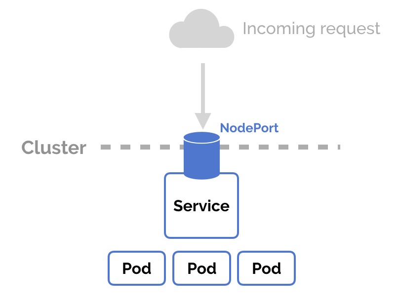
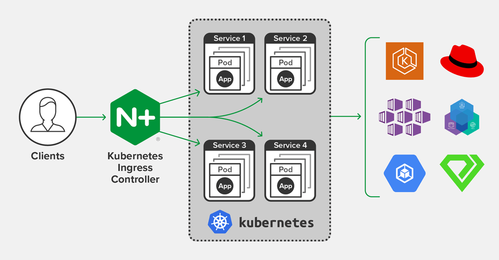

- 00 为什么我们要学习 Kubernetes 技术.md.html
- 01 重新认识 Kubernetes 的核心组件.md.html
- 02 深入理解 Kubernets 的编排对象.md.html
- 03 DevOps 场景下落地 K8s 的困难分析.md.html
- 04 微服务应用场景下落地 K8s 的困难分析.md.html
- 05 解决 K8s 落地难题的方法论提炼.md.html
- 06 练习篇：K8s 核心实践知识掌握.md.html
- 07 容器引擎 containerd 落地实践.md.html
- 08 K8s 集群安装工具 kubeadm 的落地实践.md.html
- 09 南北向流量组件 IPVS 的落地实践.md.html
- 10 东西向流量组件 Calico 的落地实践.md.html
- 11 服务发现 DNS 的落地实践.md.html
- 12 练习篇：K8s 集群配置测验.md.html
- 13 理解对方暴露服务的对象 Ingress 和 Service.md.html
- 14 应用网关 OpenResty 对接 K8s 实践.md.html
- 15 Service 层引流技术实践.md.html
- 16 Cilium 容器网络的落地实践.md.html
- 17 应用流量的优雅无损切换实践.md.html
- 18 练习篇：应用流量无损切换技术测验.md.html
- 19 使用 Rook 构建生产可用存储环境实践.md.html
- 20 有状态应用的默认特性落地分析.md.html
- 21 案例：分布式 MySQL 集群工具 Vitess 实践分析.md.html
- 22 存储对象 PV、PVC、Storage Classes 的管理落地实践.md.html
- 23 K8s 集群中存储对象灾备的落地实践.md.html
- 24 练习篇：K8s 集群配置测验.md.html
14 应用网关 OpenResty 对接 K8s 实践
当前云原生应用网关有很多选择，例如：Nginx/OpenResty、Traefik、Envoy 等，从部署流行度来看 OpenResty 毋容置疑是最流行的反向代理网关。本篇探讨的就是 Kubernetes 为了统一对外的入口网关而引入的 Ingress 对象是如何利用 OpenResty 来优化入口网关的能力的。
为什么需要 OpenResty
原生 Kubernetes Service 提供对外暴露服务的能力，通过唯一的 ClusterIP 接入 Pod 业务负载容器组对外提供服务名（附注：服务发现使用，采用内部 kube-dns 解析服务名称）并提供流量的软负载均衡。缺点是 Service 的 ClusterIP 地址只能在集群内部被访问，如果需要对集群外部用户提供此 Service 的访问能力，Kubernetes 需要通过另外两种方式来实现此类需求，一种是 NodePort，另一种是 LoadBalancer。

当容器应用采用 NodePort 方式来暴露 Service 并让外部用户访问时会有如下困扰：
- 外部访问服务时需要带 NodePort
- 每次部署服务后，NodePort 端口会改变

当容器应用采用 LoadBalancer 方式时，主要应用场景还是对接云厂商提供负载均衡上，当然云厂商都提供对应的负载均衡插件方便 Kubernetes 一键集成。
对于大部分场景下，我们仍然需要采用私有的入口应用网关来对外提供服务暴露。这个时候通过暴露七层 Web 端口把外部流量挡在外面访问。同时对于用户来讲屏蔽了 NodePort 的存在，频繁部署应用的时候用户是不需要关心 NodePort 端口占用的。
在早期 Kubernetes 引入的 ingress controller 的方案是采用的 Nginx 作为引擎的，它在使用中有一些比较突出的问题：
reload 问题
Kubernetes 原生 Ingress 在设计上，将 YAML 配置文件交由 Ingress Controller 处理，转换为 nginx.conf，再触发 reload nginx.conf 使配置生效。日常运维免不了偶尔动一动 Ingress YAML 配置，每一次配置生效，都会触发一次 reload，这是不能接受的，尤其在入口流量采用⻓连接时更容易导致事故。
扩展能力薄弱
虽然 Ingress 设计之初是为了解决入口网关，但业务对于入口网关的需求一点都不比内部网关少。业务级灰度控制、熔断、流量控制、鉴权、流量管控等需求在 Ingress 上实现的呼声更高。然而原生 Ingress 提供的扩展是捉襟见肘。

为了解决以上 Nginx 固有的问题，显然基于 Nginx + Lua 的扩展方案 OpenResty 是不二的替换方案。社区方面已经完成的从 Nginx 到 OpenResty 的 Ingress 核心组件替换。（附注：https://github.com/kubernetes/ingress-nginx/pull/4220）
重新认识 NGINX Ingress Controller

通常情况下，Kubernetes 控制器利用同步循环模式来检查控制器中的所需状态是否被更新或需要更改。为此，我们需要使用集群中的不同对象建立一个模型，特别是 Ingresses、Services、Endpoints、Secrets 和 Configmaps 来生成一个反映集群状态的当前配置文件。
为了从集群中获取这个对象，我们使用 Kubernetes Informers，尤其是 FilteredSharedInformer。这个 Informer 允许在添加、修改或删除新对象时，使用回调对单个变化做出反应。不幸的是，我们无法知道某个特定的变化是否会影响最终的配置文件。因此在每一次变更时，我们都要根据集群的状态从头开始重建一个新的模型，并与当前模型进行比较。如果新模型与当前模型相等，那么我们就避免生成一个新的 Nginx 配置并触发重载。否则，我们检查是否仅是关于 Endpoints 的差异。如果是这样，我们就使用 HTTP POST 请求将新的 Endpoints 列表发送到 Nginx 内部运行的 Lua 处理程序，并再次避免生成新的 Nginx 配置和触发重载。如果运行的模型和新模型之间的区别不仅仅是 Endpoints，我们会根据新模型创建一个新的 Nginx 配置，替换当前模型并触发重载。
为了避免进程重载，我们仍然需要清楚如下情况会导致重载:
- 创建新的入口资源
- 在现有的 Ingress 中增加了 TLS 部分
- Ingress 注解的变化，影响的不仅仅是上游配置。例如，负载平衡注解不需要重新加载。
- 从 Ingress 中添加/删除一个路径。
- 对象 Ingress、Service、Secret 被删除的时候
- 从 Ingress 中缺失的一些引用对象是可用的，比如 Service 或 Secret
- 密钥配置更新
另外，因为有 Lua 加持，我们还需要了解如何添加 lua 插件到 Nginx Ingress Controller 中。例如用例子来作为范例理解下如何添加并激活插件：
参考 https://github.com/ElvinEfendi/ingress-nginx-openidc，加入 Openidc Lua 插件。
- 添加 Lua 插件到 rootfs/etc/nginx/lua/plugins/openidc/main.lua
- 构建自己的 Ingress 镜像：
docker build -t ingress-nginx-openidc rootfs/
Dockerfile 范例：
FROM quay.io/kubernetes-ingress-controller/nginx-ingress-controller:0.26.1
USER root
RUN luarocks install lua-resty-openidc
USER www-data
COPY etc/nginx/template/nginx.tmpl /etc/nginx/template
COPY etc/nginx/lua/plugins/openidc /etc/nginx/lua/plugins/openidc
- 更新 Nginx 配置激活 Lua 插件 /etc/nginx/template/nginx.tmpl，加入
plugins.init({ "openidc" }) - 把自定义 Ingress 镜像部署到集群中，就可以提供相应的插件能力。
零宕机生产部署
官方 Nginx Ingress Controller 通过容器部署在机器上，当需要升级配置时 Ingress Pod 仍然需要重启更新，此时网络流量会出现秒断。在生产环境中，这种情况是不允许出现的。我们需要 Nginx Ingress Controller 需要一直保持运行并接入流量。
当终止 Pod 进程时，Kubernetes 会发出 SIGTERM 信号给容器主进程，默认等待 30 秒之后会发送 SIGKILL 立即终止容器进程。Kubernetes 启动容器进程能自主支持 SIGTERM 信号并能优雅关闭，但是并不是每一个容器进程都能处理，比如 Nginx 就无法直接支持。
Nginx 支持的信号会有所不同：
Nginx Signals
+-----------+--------------------+
| signal | response |
+-----------+--------------------+
| TERM, INT | fast shutdown |
| QUIT | graceful shutdown |
+-----------+--------------------+
所以如果我们不做任何前置的信号处理，当 Kubernetes 发出 GIGTERM 后，Nginx 将立即终止进程，如果此时恰好 Nginx 正在处理流量，用户会出现短暂 HTTP 503 错误。为了优雅关闭 Nginx 进程，所以我们需要想办法提前给 Nginx 进程一个 SIGQUIT 信号。解决办法就是利用 Pod 对象的 preStop Hook 来提前执行 SIGQUIT 发送操作。以下脚本就可以发送 SIGQUIT：
/usr/local/openresty/nginx/sbin/nginx -c /etc/nginx/nginx.conf -s quit
while pgrep -x nginx; do
sleep 1
done
我们可以将上面的脚本放到一个单行命令中，并将其添加到 Pod 规范的生命周期部分，如下所示：
lifecycle:
preStop:
exec:
command: ["/bin/sh", "-c", "sleep 5; /usr/local/openresty/nginx/sbin/nginx -c /etc/nginx/nginx.conf -s quit; while pgrep -x nginx; do sleep 1; done"]
请注意，在实际脚本之前有一个 sleep 5 命令。这将等待任何与 Kubernetes 相关的处理条件通过后再启动优雅的关闭。在测试过程中，如果不执行这个睡眠，Nginx 还是会中断连接。
另外，因为默认优雅关闭进程的等待时长是 5 秒，如果需要更长的时间可以加入如下配置：
spec:
terminationGracePeriodSeconds: 600
到此优雅关闭的问题就完美解决了。但是如此配置我们还是无法保证业务流量可以无中断升级。为了最终的业务部署连续性，一般我们会冗余部署 2 套 Ingress 来彻底解决重启业务带来的影响，操作步骤如下：
helm upgrade --install nginx-ingress stable/nginx-ingress --namespace ingress -f nginx/values.yaml
helm upgrade --install nginx-ingress-temp stable/nginx-ingress --namespace ingress-temp -f nginx/values.yaml
通过更改 DNS 把流量引入到 ingress-temp，然后观察流量引入的情况：
kubectl logs -lcomponent=controller -ningress -f
kubectl logs -lcomponent=controller -ningress-temp -f
更新老 Ingress Controller，在 Nginx values.yaml 中添加以下配置：
controller:
lifecycle:
preStop:
exec:
command: ["/bin/sh", "-c", "sleep 5; /usr/local/openresty/nginx/sbin/nginx -c /etc/nginx/nginx.conf -s quit; while pgrep -x nginx; do sleep 1; done"]
terminationGracePeriodSeconds: 600
发布新的 Nginx Ingress Controller：
helm upgrade --install nginx-ingress stable/nginx-ingress --namespace ingress --version 1.6.16 -f nginx/values.yaml
更新 DNS 恢复流量到老 Ingress 中。清理临时 Ingress Controller：
helm delete --purge nginx-ingress-temp --namespace ingress-temp
kubectl delete namespace ingress-temp
为 Kubernetes ingress-nginx Controller 创建自定义 Annotation
云原生的 Ingress Controller 和 Nginx 的配置方式不一样的地方就是大量使用 Annotation 标签来定义一些重用的配置选项。我们需要多了解它的实现原理并能灵活运用，这样对我们的业务运营会很帮助。
添加一个自定义 Annotation 的过程如下：
- git clone 官方 Ingress repo，在 internal/ingress/annotations 目录下创建自定义 annotation 目录。并添加 main.go，写入 Annotation 业务逻辑。
- 在 internal/ingress/annotations/annotations.go 文件中加入此新增注解变量。
- 在 types.go 声明注解的结构体对象，之后在 controller.go 中，你必须确保服务对象被注解中的值所填充。这个文件包含了处理一个 ingress 对象的逻辑，并将其转换为一个可以加载到 nginx 配置中的对象。
- nginx.tmpl 中加入注解结构体的展开变量，以方便生成最终的 nginx 配置模板。
完整的例子可以参考这里：
https://github.com/diazjf/ingress/commit/2e6ac94dd79e80e1b2d788115647f44a526afcfd
经验总结
Ingress 对象是 Kubernetes 引入流量的标准对象，在企业内部需要注意，尽量采用 Ingress 对象隔离流量分组。因为 Ingress 天然和 APIServer 集成监测，可以动态对外暴露服务能力。我们已经没有必要在做二次开发，定制开发自己的网关接入方案。直接采用 Ingress 网关都可以满足需求，不能满足需求的地方，OpenResty 提供的 Lua 插件机制可以很好地补充。除了官方提供的 Nginx ingress controller，其实国内也有开源厂商提供了内置更多插件的 OpenResty 网关，Apache APISIX Ingress（https://github.com/api7/ingress-controller），通过上面的介绍，你可以快速应用起来。
参考资料：